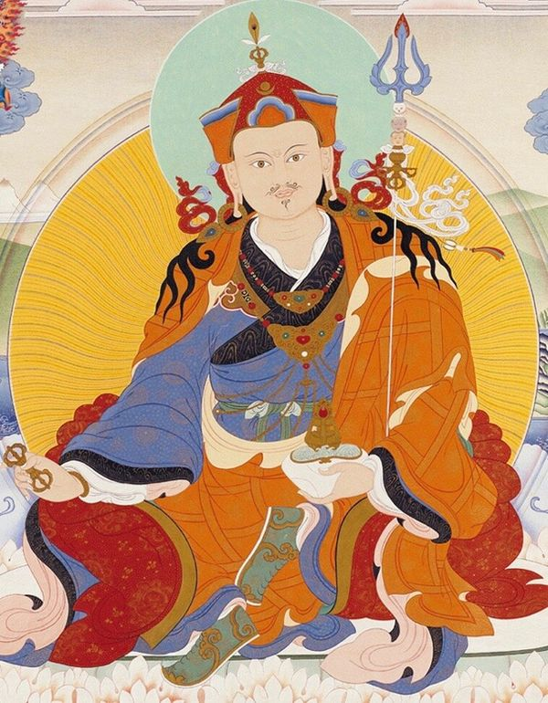
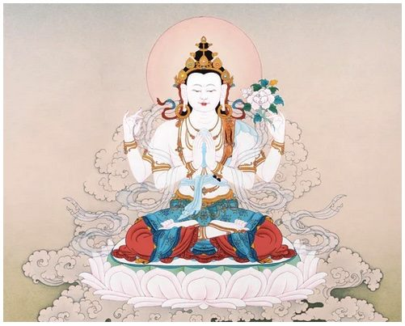

Le 12e Gyalwang Drukpa
Jigme Padma Wangchen — Né en 1963 à Tso Péma, intronisé par le XIVe Dalaï-Lama. Fondateur du mouvement Live to Love, il transmet le Dharma dans le monde entier, unissant tradition bouddhique et action contemporaine.

Drubpön Ngawang Tenzin Pagsam Yongdu
Né en 1955 à Chungkar au Bhoutan, il séjourne en France depuis plus de trente ans. Directeur spirituel du centre Drukpa Plouray et représentant du Gyalwang Drukpa en Europe.

Lopön Thrinlé Tenzin
Yves Boudéro — Moine ordonné en 1987, poète et praticien, co-président de l'Union Bouddhiste de France. Conduit les retraites et enseignements à Grenoble, intervient en aumônerie hospitalière.

Tchenrézi — Avalokiteshvara
Tchenrézi, le Bouddha de la compassion, est une divinité centrale de la lignée Drukpa. Sa pratique cultive la bienveillance universelle envers tous les êtres. Le mantra Om Mani Padme Hum lui est dédié. Les sessions de méditation de Drukpa Grenoble incluent régulièrement la pratique de Tchenrézi, accessible aux débutants comme aux pratiquants avancés.